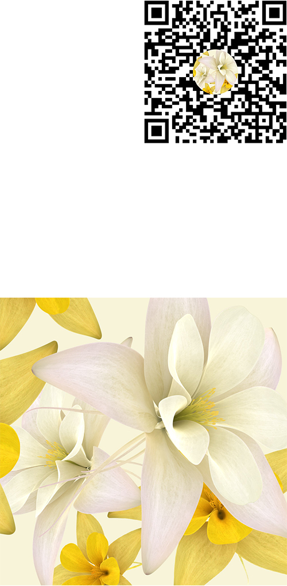
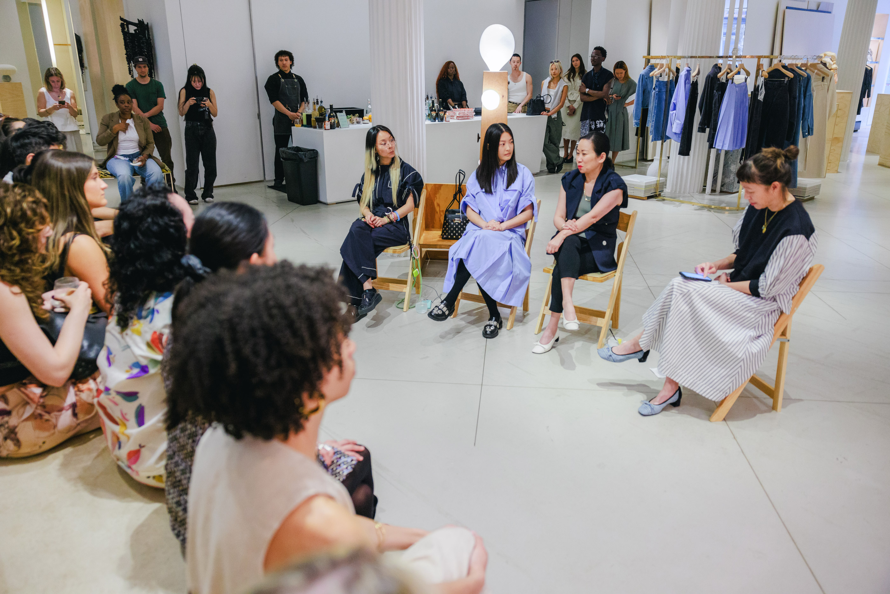

3.1 PHILLIP LIM X META PROSPER / THE FIELD
AR. (2024)
During AAPI Heritage Month 2024, I partnered with 3.1 Phillip Lim and Meta Prosper to create an AR installation—The Field.
This installation interprets the perpetual state of change and our connection to our surroundings. Inspired by Phillip Lim’s love for architecture and nature, it echoes his perspectives on the concepts of space, time, and change.
The Field unfolds in two states. After being anchored at any location of choice, it begins as an energy column that beams into the sky, and then transforms into a field of flowers, inviting the audience to participate through movement and proximity.
Haptic feedback and liquid distortion effects are integrated into the experience to simulate the sensation of touch, allowing you to feel the virtual flowers when your mobile device collides with them.
AR technology / Meta Spark
╰ ✳ ╮ Try The Field
AR. (2024)
During AAPI Heritage Month 2024, I partnered with 3.1 Phillip Lim and Meta Prosper to create an AR installation—The Field.
This installation interprets the perpetual state of change and our connection to our surroundings. Inspired by Phillip Lim’s love for architecture and nature, it echoes his perspectives on the concepts of space, time, and change.
The Field unfolds in two states. After being anchored at any location of choice, it begins as an energy column that beams into the sky, and then transforms into a field of flowers, inviting the audience to participate through movement and proximity.
Haptic feedback and liquid distortion effects are integrated into the experience to simulate the sensation of touch, allowing you to feel the virtual flowers when your mobile device collides with them.
AR technology / Meta Spark
╰ ✳ ╮ Try The Field

This partnership also included a panel discussion as part of ‘Crafting Selfhood’, an exhibition at 3.1 Phillip Lim’s NYC flagship store, celebrating female AAPI artists who demonstrate the elasticity of craft and its connection to building community.
On this panel, I spoke alongside Wen Zhou (CEO, 3.1 Phillip Lim), Karen Wong (Chief Brand Officer, New Museum), and Lena Imamura (artist).
On this panel, I spoke alongside Wen Zhou (CEO, 3.1 Phillip Lim), Karen Wong (Chief Brand Officer, New Museum), and Lena Imamura (artist).
